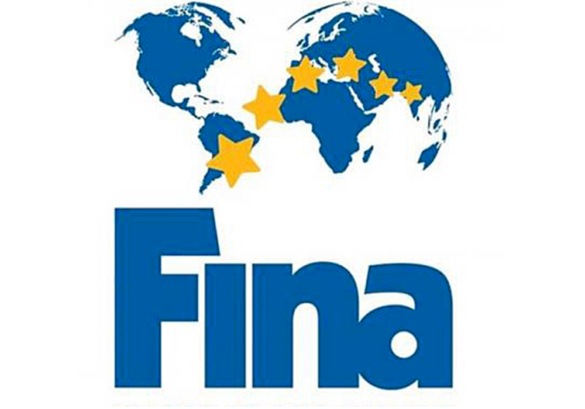
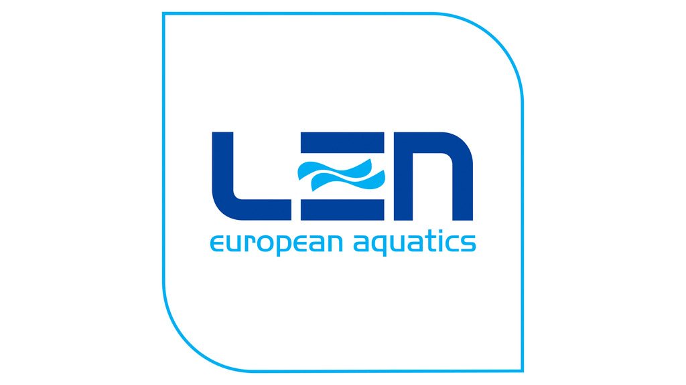
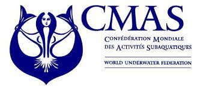
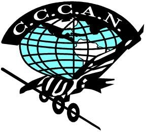

La Federación Internacional de Natación es la federación internacional reconocida por el Comité Olímpico Internacional (COI) para la administración de competencias internacionales de natación. Es una de las muchas federaciones internacionales que administran un determinado deporte/disciplina para el COI y la comunidad internacional. La sede de la FINA se encuentra en Lausanne, Suiza.
La FINA actualmente está a cargo de las competencias de cinco disciplinas que se llevan a cabo en agua: natación, natación sincronizada, natación en aguas abiertas, clavados, waterpolo. A partir de 2013, el buceo es una disciplina emergente dentro de la FINA. La FINA también supervisa las competencias "Máster" (para adultos).
El 24 de julio de 2009, Julio Maglione fue elegido Presidente de la FINA.

La Liga Europea de Natación (LEN) es la organización que se dedica a regular las normas de la natación a nivel profesional en Europa, así como a celebrar periódicamente competiciones y eventos. Es una de las cinco organizaciones continentales que conforman la Federación Internacional de Natación.
Tiene su sede en Nyon (Suiza) y cuenta, en 2016, con la afiliación de 52 federaciones nacionales. El presidente es el italiano Paolo Barelli.
La LEN fue fundada el año 1926 en Budapest por representantes de 8 federaciones nacionales: Dinamarca, Finlandia, Francia, Noruega, Países Bajos, Polonia, Suecia y Suiza.
En 1926se celebró el primer Campeonato Europeo de Natación en Budapest. Estos campeonatos incluían a la natación, nado sincronizado, saltos y waterpolo. Hasta 1997 se mantuvo este formato. En 1989 se realizó el primer Campenato Europeo de Natación de Aguas Abiertas en la localidad de Stari Grad (hoy Croacia).
En 1991 se realizó el primer Campeonato Europeo de Natación de Piscina Corta en Gelsenkirchen (Alemania). En estos campeonatos solo se realizan pruebas de natación en una piscina de 25 m.

La Confederación Mundial de Actividades Subacuáticas, C.M.A.S. de forma abreviada, es una organización de nivel mundial fundada en 1958 que gestiona a través de sus diversos comités la práctica recreativa o deportiva, así como la científica de las diversas actividades subacuáticas, principalmente el submarinismo.
El origen de la Confederación se remonta al 28 de septiembre de 1958. Con ocasión del Congreso de la Confederación Internacional independiente que concernia al conjunto de Federaciones de actividades subacuáticas celebrado en Bruselas. En ese encuentro las federaciones de la República Federal de Alemania, Bélgica, Brasil, Francia, Grecia, Italia, Mónaco, Portugal, suiza, los Estados Unidos y Yugoslavia acordaron la creación de la Confederación.
Con el fin de dar forma a esta decisión, se celebró una nueva reunión en Mónaco durante los días 9, 10 y 11 de enero de 1959 donde se establecieron las bases de la Confederación Mundial de Actividades Subacuaticas tomando como abreviación el acrónimo "C.M.A.S.". (Denominada en inglés "World Confederation of Underwater Activities" y en francés "Confederation Mondiale des Activites Subaquatiques"). Esta Confederación agrupa a las Federaciones de Actividades Subacuáticas de cada país.
La confederación sustituyó, de forma especial en lo relativo a todas sus funciones y responsabilidades al antiguo "Comité de deportes Submarinos". (Denominado en inglés "Underwater Sports Committee" y en francés "Comité des Sports Sous-Marins") perteneciente a la Confederación Internacional de Deportes de Pesca fundado el 22 de febrero de 1952.

La CCCAN (pronunciado C-C-Can), más conocida como la Confederación Centroamericana y del Caribe de Aficionados a la Natación, es el órgano rector de las actividades deportivas acuáticas en la región del Caribe y Centroamérica. Es una organización miembro de la UANA y afiliada a la FINA.
CCCAN supervisa las siguientes competiciones:
